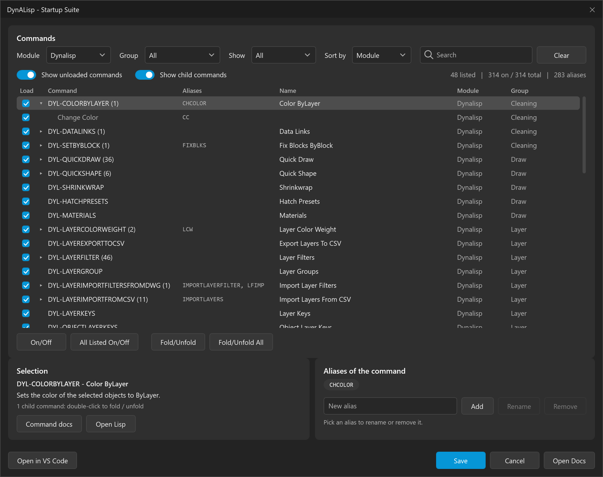
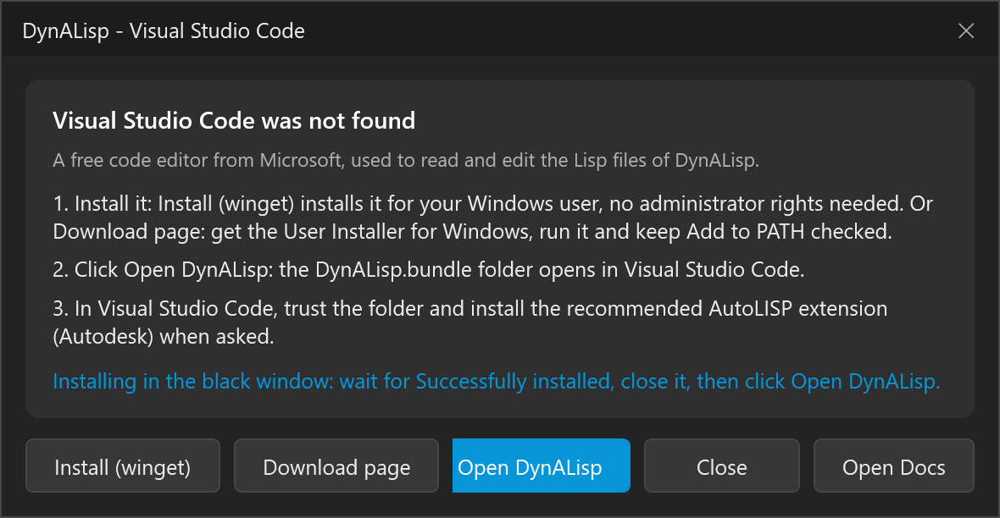

Suite de démarrage
| Syntaxe | DYL-SUITE |
| Requis | AutoCAD 2025 ou plus récent pour Windows |
| Licence | Licence publique générale GNU v3 |
Description
Toutes les commandes de DynALisp dans une liste. Activez celles que vous utilisez et donnez-leur des noms courts à taper.

Utilisation
- Tapez Dyl-Suite.
- Cochez les commandes voulues et ajoutez leurs noms courts sous Aliases of the command.
- Cliquez Save.
La fenêtre
- Module / Group / Show / Sort by / Search – pour trouver une commande.
- Liste – cochez Load pour activer une commande. Cliquez la flèche d'une commande pour voir ses variantes. Double-cliquez une commande pour ouvrir ses docs.
- Selection – ce que fait la commande. Command docs ouvre sa page, Open Lisp son programme.
- Aliases of the command – Add, Rename ou Remove un nom court. DynALisp vous prévient quand un nom est déjà pris par AutoCAD ou un autre programme.
- On/Off – active ou désactive les commandes choisies.
- Open in VS Code – ouvre DynALisp dans Visual Studio Code (plus bas).
Visual Studio Code
Dyl-VSCode ouvre DynALisp dans Visual Studio Code, pour lire ou modifier les programmes. S'il n'est pas encore installé :

- Install (winget) – l'installe pour vous. Attendez Successfully installed, puis cliquez Open DynALisp.
- Download page – pour l'installer vous-même.
Autres commandes
| Commande | Ce qu'elle fait |
|---|---|
| Dyl-Reload | Recharge les commandes. |
| Dyl-SuiteUpdate | Met à jour la liste des commandes. |